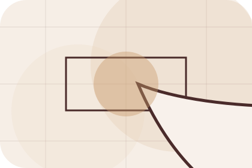
Details
What information helps Room respond with a useful answer instead of a generic reply.
Contact / 01
Contact opens as a clear interiors decision hub: what Room offers, who it helps, why it matters, and which route to take first.
The first screen combines positioning, proof, primary action, and fast internal navigation, so people can act immediately or compare the rest of the contact route with context.
Editorial room hero
Select the closest route and Room keeps the next step, proof, and follow-up expectation aligned with taste and home confidence.
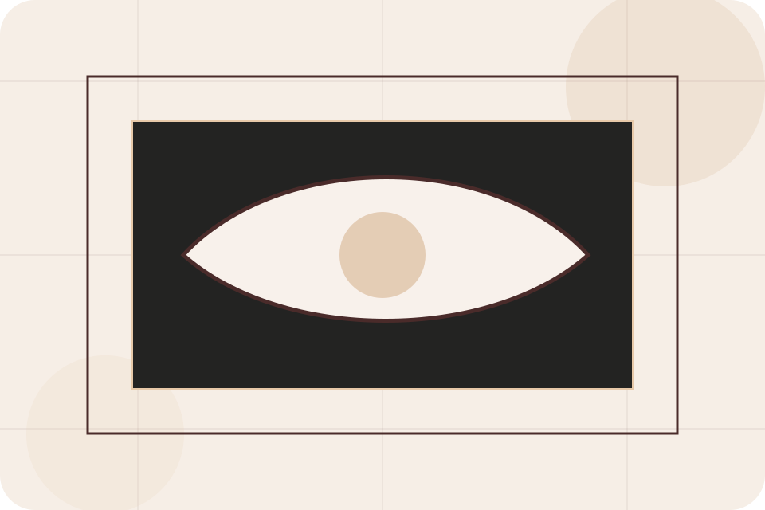
Contact / 02
Form makes the contact path concrete: what to send, how the response works, and what Room needs before visitors start the design.
The section reduces contact friction by naming the channel, expected detail, privacy path, and response expectation instead of dropping visitors into a generic form.
Start DesignRoom keeps form practical: send the key details, choose the right contact route, and know what kind of reply to expect.
Start Design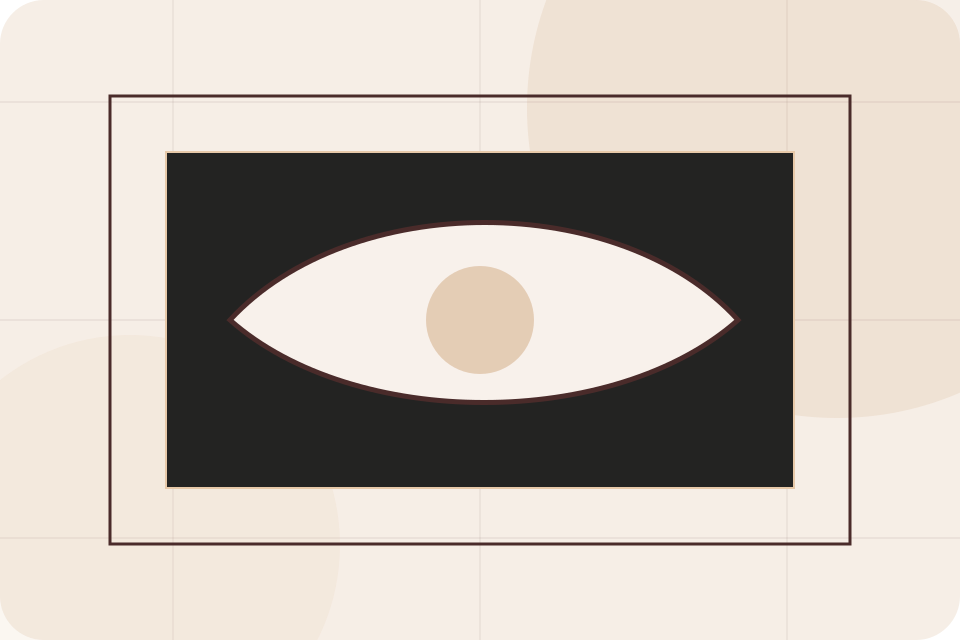
Contact / 03
Photos makes the contact path concrete: what to send, how the response works, and what Room needs before visitors start the design.
The section reduces contact friction by naming the channel, expected detail, privacy path, and response expectation instead of dropping visitors into a generic form.
Start Design
What information helps Room respond with a useful answer instead of a generic reply.
How the visitor should think about response, urgency, location, or availability.
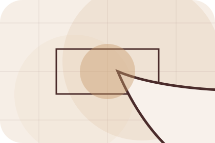
The expected next message keeps scope, timing, and the first practical step clear.
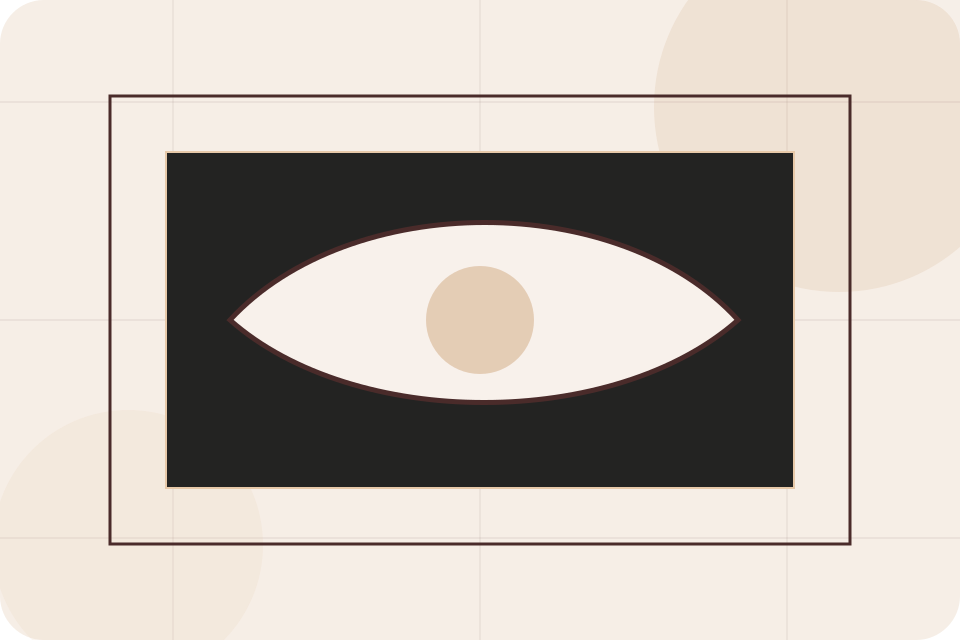
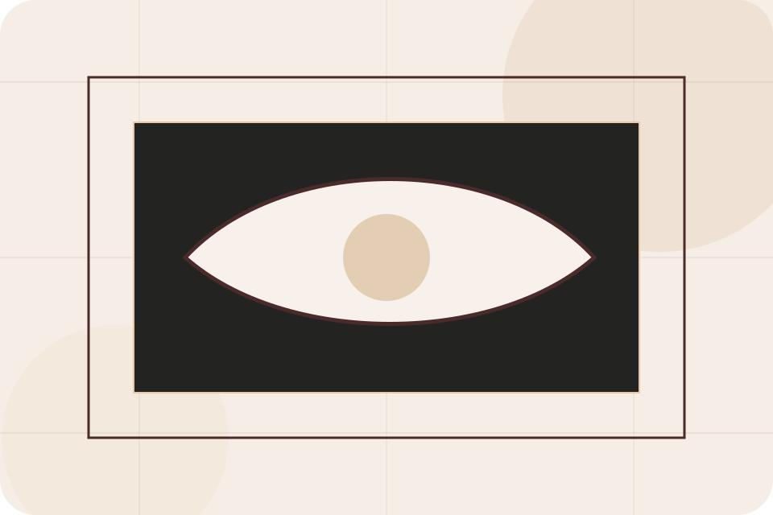
Contact / 04
Budget makes the contact path concrete: what to send, how the response works, and what Room needs before visitors start the design.
The section reduces contact friction by naming the channel, expected detail, privacy path, and response expectation instead of dropping visitors into a generic form.
Start DesignWhat information helps Room respond with a useful answer instead of a generic reply.
How the visitor should think about response, urgency, location, or availability.
The expected next message keeps scope, timing, and the first practical step clear.
Contact / 05
Style makes the contact path concrete: what to send, how the response works, and what Room needs before visitors start the design.
The section reduces contact friction by naming the channel, expected detail, privacy path, and response expectation instead of dropping visitors into a generic form.
Start DesignWhat information helps Room respond with a useful answer instead of a generic reply.
How the visitor should think about response, urgency, location, or availability.
The expected next message keeps scope, timing, and the first practical step clear.
Contact / 06
Booking makes the contact path concrete: what to send, how the response works, and what Room needs before visitors start the design.
The section reduces contact friction by naming the channel, expected detail, privacy path, and response expectation instead of dropping visitors into a generic form.
Start DesignRoom keeps booking practical: send the key details, choose the right contact route, and know what kind of reply to expect.
Start DesignEditorial room hero
Select the closest route and Room keeps the next step, proof, and follow-up expectation aligned with taste and home confidence.
Contact / 07
Phone makes the contact path concrete: what to send, how the response works, and what Room needs before visitors start the design.
The section reduces contact friction by naming the channel, expected detail, privacy path, and response expectation instead of dropping visitors into a generic form.
Start Design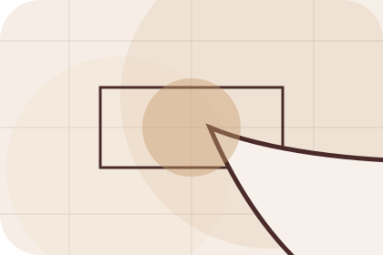
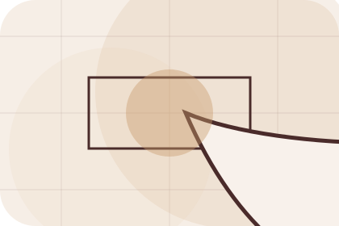
What information helps Room respond with a useful answer instead of a generic reply.
Contact / 08
Response makes the contact path concrete: what to send, how the response works, and what Room needs before visitors start the design.
The section reduces contact friction by naming the channel, expected detail, privacy path, and response expectation instead of dropping visitors into a generic form.
Start DesignWhat information helps Room respond with a useful answer instead of a generic reply.
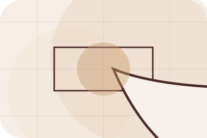
How the visitor should think about response, urgency, location, or availability.
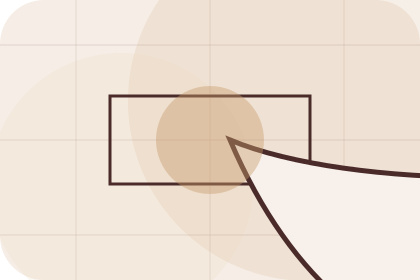
The expected next message keeps scope, timing, and the first practical step clear.
Contact / 09
Submit makes the contact path concrete: what to send, how the response works, and what Room needs before visitors start the design.
The section reduces contact friction by naming the channel, expected detail, privacy path, and response expectation instead of dropping visitors into a generic form.
Start DesignWhat information helps Room respond with a useful answer instead of a generic reply.
How the visitor should think about response, urgency, location, or availability.
The expected next message keeps scope, timing, and the first practical step clear.
Contact / 10
Room closes the contact route with a clear action, a quick reminder of the value, and a low-friction way to start the design.
Visitors who are ready can use the primary action. Visitors who are still comparing can scan the section links, proof, and support routes before they start the design.
Start DesignThe final block keeps the choice simple: act now, compare one more proof route, or send enough detail for a focused response.
Start Designtaste and home confidence
A material-led interiors site with luxe moodboards, serif headlines, room selectors, and sourcing CTAs. Contact ends with a direct path to start the design, plus enough context for visitors who still need to compare.
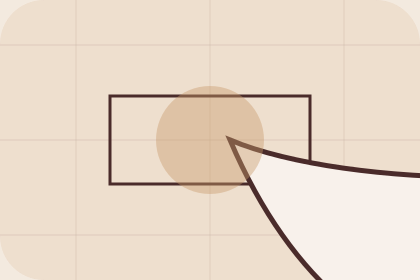
Start DesignInformation is provided for planning and should be reviewed for the final client, location, and operating rules.